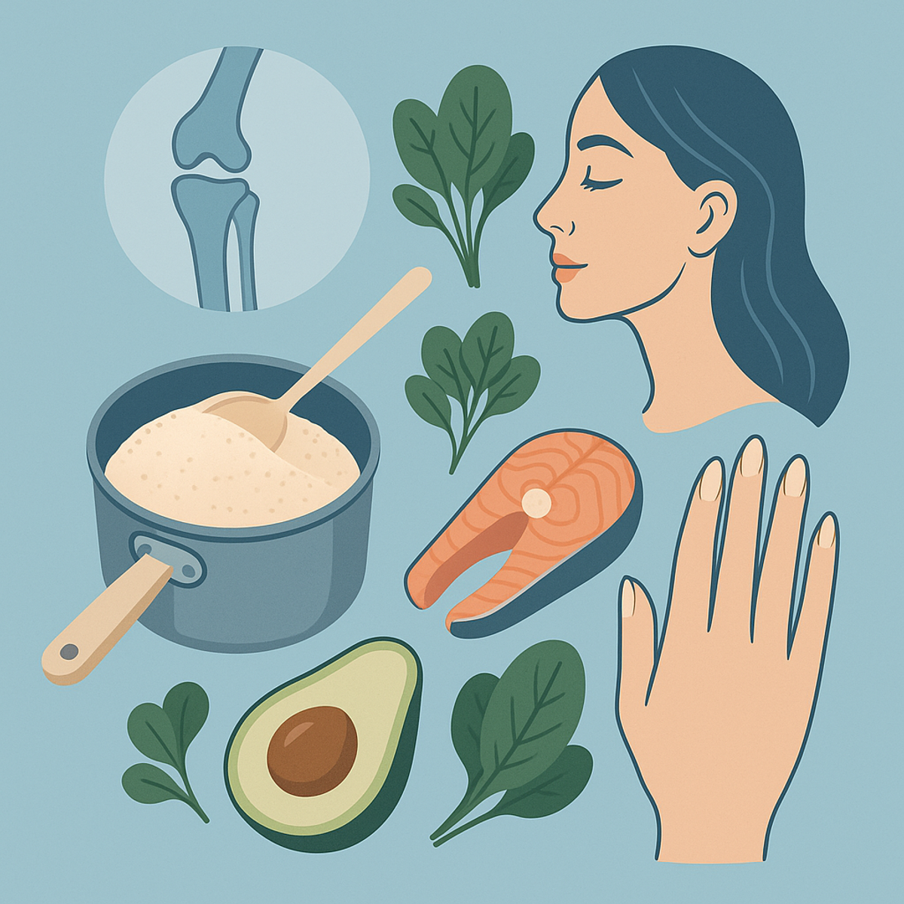

ג'לטין: הסוד הטעים לעור זוהר ומפרקים חזקים

מדוע ג'לטין קיבל מוניטין שלילי, למה אני מקפידה לצרוך אותו, ואיך הוא תורם לבריאות העור, המפרקים והמעיים.
מה זה ג'לטין בכלל?
ג'לטין הוא חלבון טבעי המגיע משדה הבריכה של בעלי לב. הוא נוצר כשגוף מסבסים את הקולגן, חלבון המצויר בכל ריכוד של בעלי לב. הג'לטין המזון הוא בעל מעמד גבוה ומספק את כמות האמינו שהגוף צריך.
הסיבות למוניטין השלילי
ג'לטין רבים מתקשרים אליו כאל "שמורה לבריאות" אבל הכי מקובל להשתמש בו כחלבון במתכונים וכמשמר תערובות. הסיבה שאנשים מתקשים להבין אותו היא שהג'לטין המסחרי לעיתים קרובות מוכל עם תוספות לא בריאות ומסוכרים.
התועלת לבריאות
ג'לטין מספק חלבון גבוה באיכות גבוהה, המספק חלבונים שהגוף מרצה לתמוך בעור זוהר, מפרקים חזקים ומעיים בריאים. הוא טעים, קל לעיכול ומתאים לכל גיל וכולל תזונה פשוטה.
כמו כן, ג'לטין תומך במערכת העיכול ומעצים את תפקוד הגסטרואינטסטי. הוא יכול לשמש כבסיס למנגו, לעוגיות, למוס ולמנגנוני אחרים שאינם משתמשים בקמח.
איזה ג'לטין להזמין?
מומלץ להשתמש בג'לטין איכותי ללא תוספות, במיוחד ג'לטין דגלי או ג'לטין משמעתי. כן מומלץ לקבל את הג'לטין מהדגלים או מהרכבים הטבעיים של הבעליים, אבל גם ג'לטין מיוצר מהבעליים עצמם ביצעוניים יכול להיות מצוין.
הדבר החשוב לזכור הוא שג'לטין הוא חלבון בריא ומצוין שיכול לשמש את הגוף בצורה מצוינת.